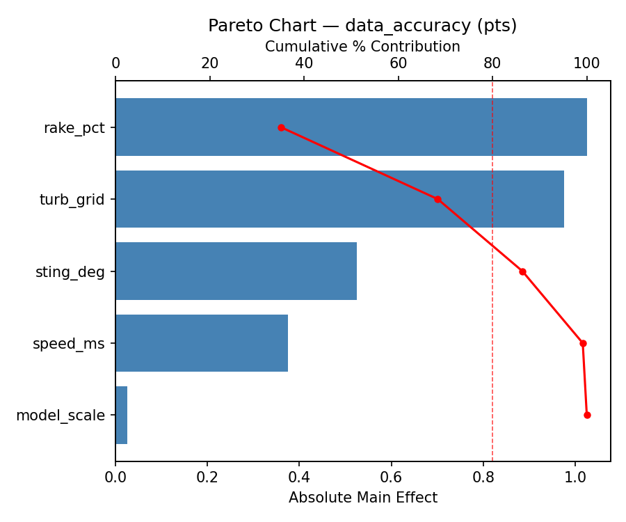
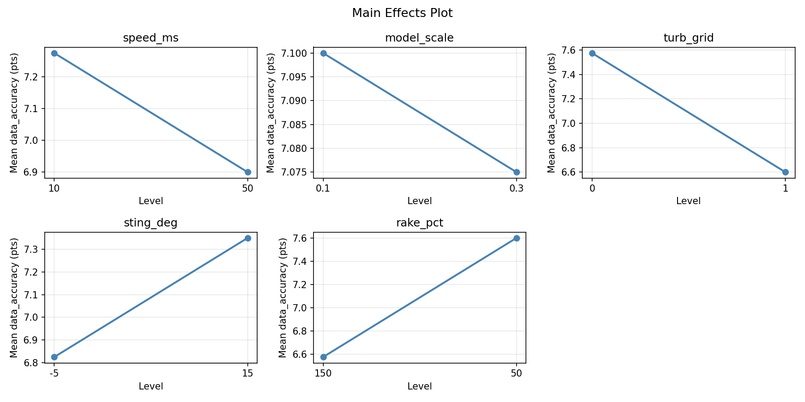
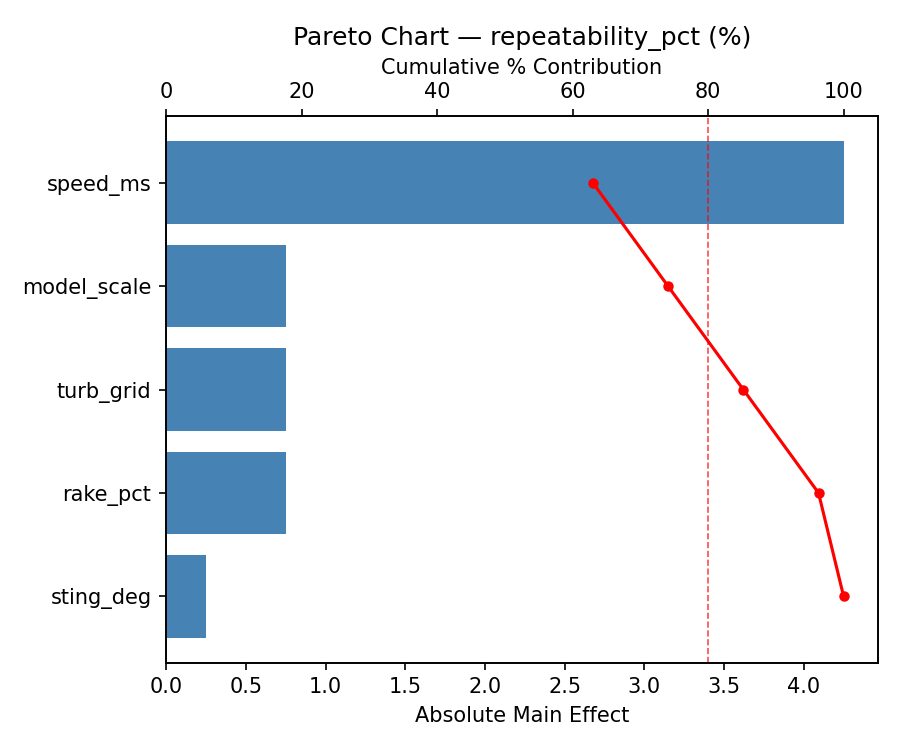
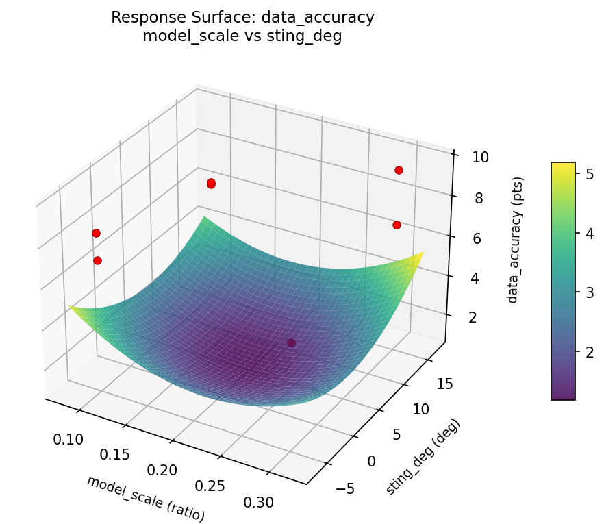
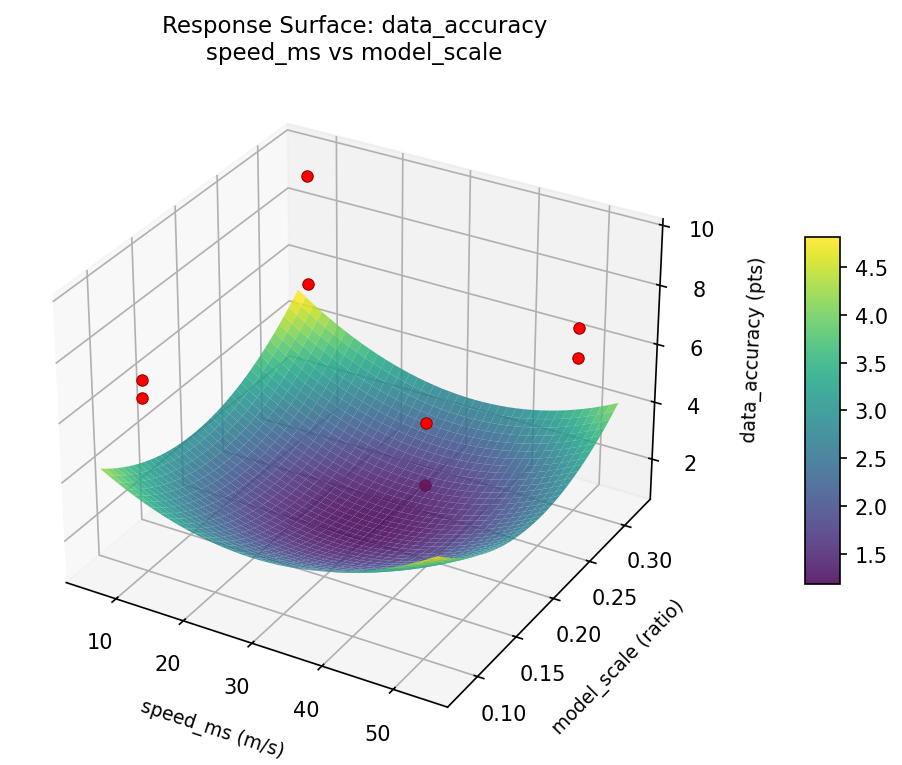
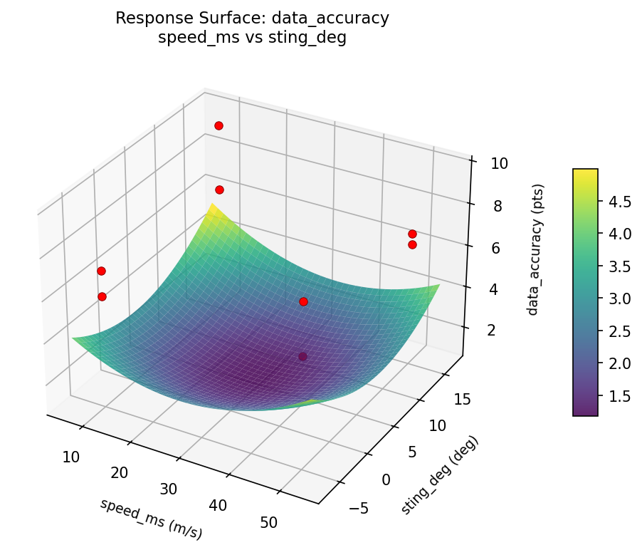
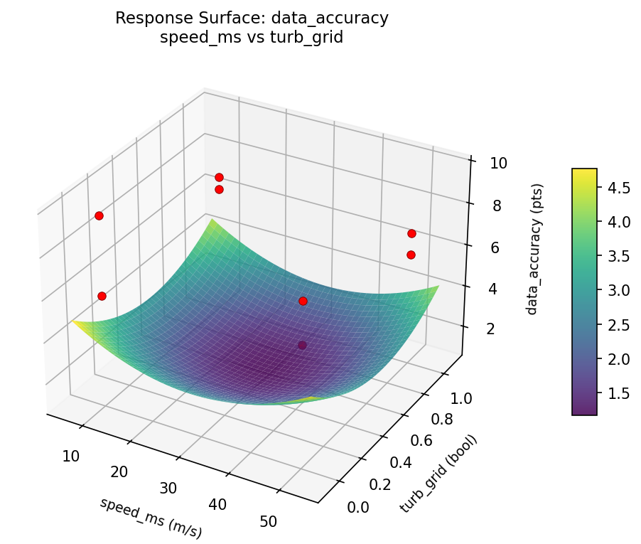
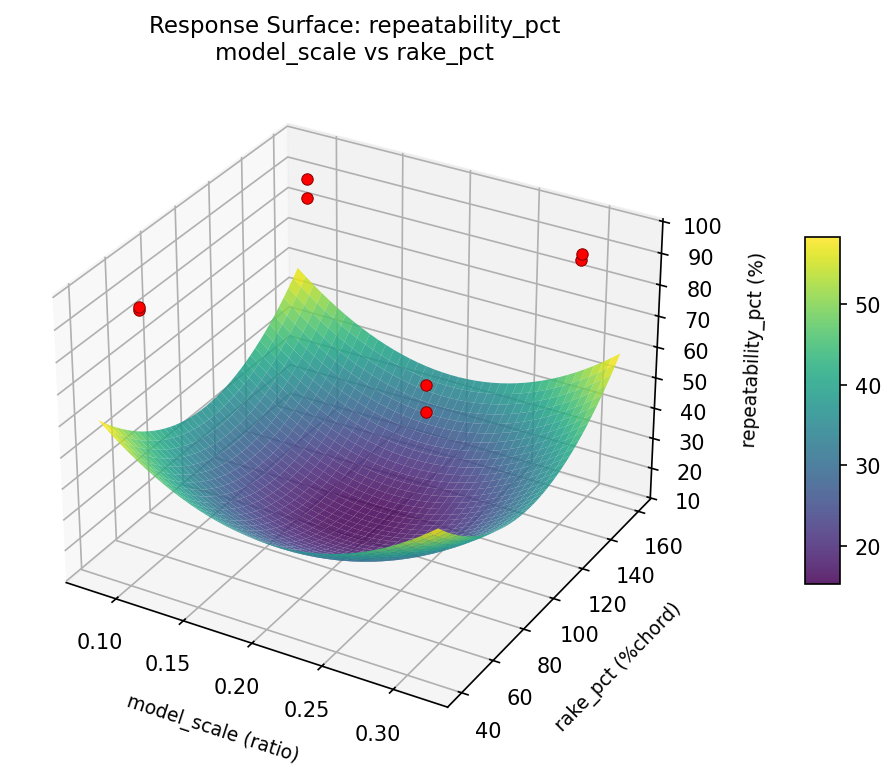
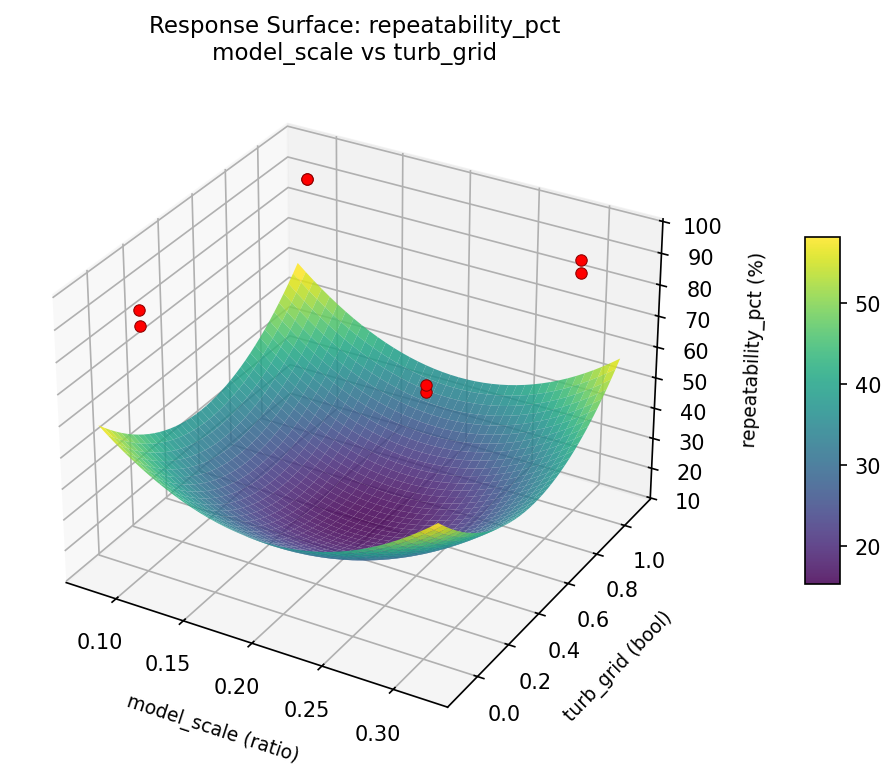
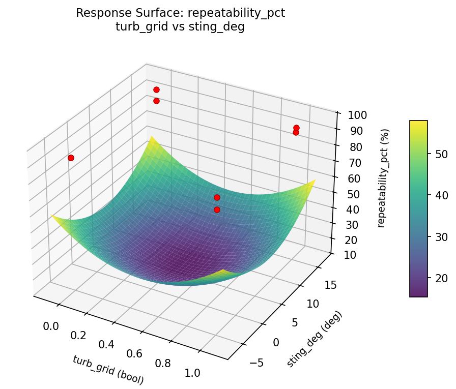

Summary
This experiment investigates wind tunnel test setup. Plackett-Burman screening of tunnel speed, model scale, turbulence grid, sting angle, and measurement rake position for data accuracy and repeatability.
The design varies 5 factors: speed ms (m/s), ranging from 10 to 50, model scale (ratio), ranging from 0.1 to 0.3, turb grid (bool), ranging from 0 to 1, sting deg (deg), ranging from -5 to 15, and rake pct (%chord), ranging from 50 to 150. The goal is to optimize 2 responses: data accuracy (pts) (maximize) and repeatability pct (%) (maximize). Fixed conditions held constant across all runs include tunnel = closed_return, test section = 1x1m.
A Plackett-Burman screening design was used to efficiently test 5 factors in only 8 runs. This design assumes interactions are negligible and focuses on identifying the most influential main effects.
Key Findings
For data accuracy, the most influential factors were sting deg (53.8%), turb grid (35.0%), speed ms (7.7%). The best observed value was 9.6 (at speed ms = 10, model scale = 0.3, turb grid = 0).
For repeatability pct, the most influential factors were speed ms (44.8%), sting deg (17.2%), rake pct (17.2%). The best observed value was 95.0 (at speed ms = 10, model scale = 0.3, turb grid = 0).
Recommended Next Steps
- Follow up with a response surface design (CCD or Box-Behnken) on the top 3–4 factors to model curvature and find the true optimum.
- Consider whether any fixed factors should be varied in a future study.
- The screening results can guide factor reduction — drop factors contributing less than 5% and re-run with a smaller, more focused design.
Experimental Setup
Factors
| Factor | Low | High | Unit |
|---|
speed_ms | 10 | 50 | m/s |
model_scale | 0.1 | 0.3 | ratio |
turb_grid | 0 | 1 | bool |
sting_deg | -5 | 15 | deg |
rake_pct | 50 | 150 | %chord |
Fixed: tunnel = closed_return, test_section = 1x1m
Responses
| Response | Direction | Unit |
|---|
data_accuracy | ↑ maximize | pts |
repeatability_pct | ↑ maximize | % |
Configuration
{
"metadata": {
"name": "Wind Tunnel Test Setup",
"description": "Plackett-Burman screening of tunnel speed, model scale, turbulence grid, sting angle, and measurement rake position for data accuracy and repeatability"
},
"factors": [
{
"name": "speed_ms",
"levels": [
"10",
"50"
],
"type": "continuous",
"unit": "m/s"
},
{
"name": "model_scale",
"levels": [
"0.1",
"0.3"
],
"type": "continuous",
"unit": "ratio"
},
{
"name": "turb_grid",
"levels": [
"0",
"1"
],
"type": "continuous",
"unit": "bool"
},
{
"name": "sting_deg",
"levels": [
"-5",
"15"
],
"type": "continuous",
"unit": "deg"
},
{
"name": "rake_pct",
"levels": [
"50",
"150"
],
"type": "continuous",
"unit": "%chord"
}
],
"fixed_factors": {
"tunnel": "closed_return",
"test_section": "1x1m"
},
"responses": [
{
"name": "data_accuracy",
"optimize": "maximize",
"unit": "pts"
},
{
"name": "repeatability_pct",
"optimize": "maximize",
"unit": "%"
}
],
"settings": {
"operation": "plackett_burman",
"test_script": "use_cases/267_wind_tunnel_setup/sim.sh"
}
}
Experimental Matrix
The Plackett-Burman Design produces 8 runs. Each row is one experiment with specific factor settings.
| Run | speed_ms | model_scale | turb_grid | sting_deg | rake_pct |
|---|
| 1 | 50 | 0.3 | 1 | -5 | 50 |
| 2 | 10 | 0.1 | 1 | 15 | 50 |
| 3 | 10 | 0.3 | 0 | 15 | 50 |
| 4 | 50 | 0.3 | 1 | 15 | 150 |
| 5 | 10 | 0.3 | 0 | -5 | 150 |
| 6 | 50 | 0.1 | 0 | 15 | 150 |
| 7 | 10 | 0.1 | 1 | -5 | 150 |
| 8 | 50 | 0.1 | 0 | -5 | 50 |
Step-by-Step Workflow
1
Preview the design
$ python doe.py info --config use_cases/267_wind_tunnel_setup/config.json
2
Generate the runner script
$ python doe.py generate --config use_cases/267_wind_tunnel_setup/config.json \
--output use_cases/267_wind_tunnel_setup/results/run.sh --seed 42
3
Execute the experiments
$ bash use_cases/267_wind_tunnel_setup/results/run.sh
4
Analyze results
$ python doe.py analyze --config use_cases/267_wind_tunnel_setup/config.json
5
Get optimization recommendations
$ python doe.py optimize --config use_cases/267_wind_tunnel_setup/config.json
6
Multi-objective optimization
With 2 competing responses, use --multi to find the best compromise via Derringer–Suich desirability.
$ python doe.py optimize --config use_cases/267_wind_tunnel_setup/config.json --multi
7
Generate the HTML report
$ python doe.py report --config use_cases/267_wind_tunnel_setup/config.json \
--output use_cases/267_wind_tunnel_setup/results/report.html
Features Exercised
| Feature | Value |
|---|
| Design type | plackett_burman |
| Factor types | continuous (all 5) |
| Arg style | double-dash |
| Responses | 2 (data_accuracy ↑, repeatability_pct ↑) |
| Total runs | 8 |
Analysis Results
Generated from actual experiment runs using the DOE Helper Tool.
Response: data_accuracy
Top factors: sting_deg (53.8%), turb_grid (35.0%), speed_ms (7.7%).
Pareto Chart

Main Effects Plot

Response: repeatability_pct
Top factors: speed_ms (44.8%), sting_deg (17.2%), rake_pct (17.2%).
Pareto Chart

Main Effects Plot

Response Surface Plots
3D surfaces fitted with quadratic RSM. Red dots are observed data points.
data accuracy model scale vs rake pct

data accuracy model scale vs sting deg

data accuracy model scale vs turb grid

data accuracy speed ms vs model scale

data accuracy speed ms vs rake pct

data accuracy speed ms vs sting deg

data accuracy speed ms vs turb grid

data accuracy sting deg vs rake pct

data accuracy turb grid vs rake pct

data accuracy turb grid vs sting deg

repeatability pct model scale vs rake pct

repeatability pct model scale vs sting deg

repeatability pct model scale vs turb grid

repeatability pct speed ms vs model scale

repeatability pct speed ms vs rake pct

repeatability pct speed ms vs sting deg
repeatability pct speed ms vs turb grid

repeatability pct sting deg vs rake pct

repeatability pct turb grid vs rake pct

repeatability pct turb grid vs sting deg

Multi-Objective Optimization
When responses compete, Derringer–Suich desirability finds the best compromise.
Each response is scaled to a 0–1 desirability, then combined via a weighted geometric mean.
Overall Desirability
D = 0.9545
Per-Response Desirability
| Response | Weight | Desirability | Predicted | Dir |
|---|
data_accuracy |
1.5 |
|
9.60 0.9545 9.60 pts |
↑ |
repeatability_pct |
1.0 |
|
95.00 0.9545 95.00 % |
↑ |
Recommended Settings
| Factor | Value |
|---|
speed_ms | 10 m/s |
model_scale | 0.1 ratio |
turb_grid | 1 bool |
sting_deg | -5 deg |
rake_pct | 150 %chord |
Source: from observed run #1
Trade-off Summary
Sacrifice = how much worse than single-objective best.
| Response | Predicted | Best Observed | Sacrifice |
|---|
repeatability_pct | 95.00 | 95.00 | +0.00 |
Top 3 Runs by Desirability
| Run | D | Factor Settings |
|---|
| #4 | 0.6859 | speed_ms=50, model_scale=0.3, turb_grid=1, sting_deg=15, rake_pct=150 |
| #3 | 0.4887 | speed_ms=50, model_scale=0.1, turb_grid=0, sting_deg=15, rake_pct=150 |
Model Quality
| Response | R² | Type |
|---|
repeatability_pct | 0.4867 | linear |
Full Multi-Objective Output
============================================================
MULTI-OBJECTIVE OPTIMIZATION
Method: Derringer-Suich Desirability Function
============================================================
Overall desirability: D = 0.9545
Response Weight Desirability Predicted Direction
---------------------------------------------------------------------
data_accuracy 1.5 0.9545 9.60 pts ↑
repeatability_pct 1.0 0.9545 95.00 % ↑
Recommended settings:
speed_ms = 10 m/s
model_scale = 0.1 ratio
turb_grid = 1 bool
sting_deg = -5 deg
rake_pct = 150 %chord
(from observed run #1)
Trade-off summary:
data_accuracy: 9.60 (best observed: 9.60, sacrifice: +0.00)
repeatability_pct: 95.00 (best observed: 95.00, sacrifice: +0.00)
Model quality:
data_accuracy: R² = 0.7965 (linear)
repeatability_pct: R² = 0.4867 (linear)
Top 3 observed runs by overall desirability:
1. Run #1 (D=0.9545): speed_ms=10, model_scale=0.1, turb_grid=1, sting_deg=-5, rake_pct=150
2. Run #4 (D=0.6859): speed_ms=50, model_scale=0.3, turb_grid=1, sting_deg=15, rake_pct=150
3. Run #3 (D=0.4887): speed_ms=50, model_scale=0.1, turb_grid=0, sting_deg=15, rake_pct=150
Full Analysis Output
=== Main Effects: data_accuracy ===
Factor Effect Std Error % Contribution
--------------------------------------------------------------
sting_deg 1.5750 0.4573 53.8%
turb_grid 1.0250 0.4573 35.0%
speed_ms -0.2250 0.4573 7.7%
model_scale -0.0750 0.4573 2.6%
rake_pct 0.0250 0.4573 0.9%
=== ANOVA Table: data_accuracy ===
Source DF SS MS F p-value
-----------------------------------------------------------------------------
speed_ms 1 0.1013 0.1013 0.044 0.8420
model_scale 1 0.0112 0.0112 0.005 0.9469
turb_grid 1 2.1012 2.1012 0.915 0.3828
sting_deg 1 4.9612 4.9612 2.160 0.2016
rake_pct 1 0.0012 0.0012 0.001 0.9823
speed_ms*model_scale 1 2.1012 2.1012 0.915 0.3828
speed_ms*turb_grid 1 0.0113 0.0113 0.005 0.9469
speed_ms*sting_deg 1 0.0013 0.0013 0.001 0.9823
speed_ms*rake_pct 1 4.9612 4.9612 2.160 0.2016
model_scale*turb_grid 1 0.1013 0.1013 0.044 0.8420
model_scale*sting_deg 1 1.5313 1.5313 0.667 0.4513
model_scale*rake_pct 1 3.0013 3.0013 1.307 0.3048
turb_grid*sting_deg 1 3.0013 3.0013 1.307 0.3048
turb_grid*rake_pct 1 1.5313 1.5313 0.667 0.4513
sting_deg*rake_pct 1 0.1013 0.1013 0.044 0.8420
Error (Lenth PSE) 5 11.4844 2.2969
Total 7 11.7087 1.6727
Note: Error estimated using Lenth's pseudo-standard-error (unreplicated design)
=== Interaction Effects: data_accuracy ===
Factor A Factor B Interaction % Contribution
------------------------------------------------------------------------
speed_ms rake_pct -1.5750 21.4%
model_scale rake_pct -1.2250 16.7%
turb_grid sting_deg 1.2250 16.7%
speed_ms model_scale 1.0250 13.9%
model_scale sting_deg -0.8750 11.9%
turb_grid rake_pct 0.8750 11.9%
model_scale turb_grid -0.2250 3.1%
sting_deg rake_pct 0.2250 3.1%
speed_ms turb_grid -0.0750 1.0%
speed_ms sting_deg -0.0250 0.3%
=== Summary Statistics: data_accuracy ===
speed_ms:
Level N Mean Std Min Max
------------------------------------------------------------
10 4 7.2000 1.6513 5.9000 9.6000
50 4 6.9750 1.0689 5.9000 8.4000
model_scale:
Level N Mean Std Min Max
------------------------------------------------------------
0.1 4 7.1250 1.7443 5.9000 9.6000
0.3 4 7.0500 0.9256 6.4000 8.4000
turb_grid:
Level N Mean Std Min Max
------------------------------------------------------------
0 4 6.5750 0.5377 5.9000 7.1000
1 4 7.6000 1.7068 5.9000 9.6000
sting_deg:
Level N Mean Std Min Max
------------------------------------------------------------
-5 4 6.3000 0.4899 5.9000 6.9000
15 4 7.8750 1.4175 6.4000 9.6000
rake_pct:
Level N Mean Std Min Max
------------------------------------------------------------
150 4 7.0750 1.0275 5.9000 8.4000
50 4 7.1000 1.6872 5.9000 9.6000
=== Main Effects: repeatability_pct ===
Factor Effect Std Error % Contribution
--------------------------------------------------------------
speed_ms 3.2500 1.0426 44.8%
sting_deg 1.2500 1.0426 17.2%
rake_pct 1.2500 1.0426 17.2%
model_scale -0.7500 1.0426 10.3%
turb_grid 0.7500 1.0426 10.3%
=== ANOVA Table: repeatability_pct ===
Source DF SS MS F p-value
-----------------------------------------------------------------------------
speed_ms 1 21.1250 21.1250 4.507 0.0872
model_scale 1 1.1250 1.1250 0.240 0.6449
turb_grid 1 1.1250 1.1250 0.240 0.6449
sting_deg 1 3.1250 3.1250 0.667 0.4513
rake_pct 1 3.1250 3.1250 0.667 0.4513
speed_ms*model_scale 1 1.1250 1.1250 0.240 0.6449
speed_ms*turb_grid 1 1.1250 1.1250 0.240 0.6449
speed_ms*sting_deg 1 3.1250 3.1250 0.667 0.4513
speed_ms*rake_pct 1 3.1250 3.1250 0.667 0.4513
model_scale*turb_grid 1 21.1250 21.1250 4.507 0.0872
model_scale*sting_deg 1 21.1250 21.1250 4.507 0.0872
model_scale*rake_pct 1 10.1250 10.1250 2.160 0.2016
turb_grid*sting_deg 1 10.1250 10.1250 2.160 0.2016
turb_grid*rake_pct 1 21.1250 21.1250 4.507 0.0872
sting_deg*rake_pct 1 21.1250 21.1250 4.507 0.0872
Error (Lenth PSE) 5 23.4375 4.6875
Total 7 60.8750 8.6964
Note: Error estimated using Lenth's pseudo-standard-error (unreplicated design)
=== Interaction Effects: repeatability_pct ===
Factor A Factor B Interaction % Contribution
------------------------------------------------------------------------
model_scale turb_grid 3.2500 15.1%
model_scale sting_deg -3.2500 15.1%
turb_grid rake_pct 3.2500 15.1%
sting_deg rake_pct -3.2500 15.1%
model_scale rake_pct -2.2500 10.5%
turb_grid sting_deg 2.2500 10.5%
speed_ms sting_deg -1.2500 5.8%
speed_ms rake_pct -1.2500 5.8%
speed_ms model_scale 0.7500 3.5%
speed_ms turb_grid -0.7500 3.5%
=== Summary Statistics: repeatability_pct ===
speed_ms:
Level N Mean Std Min Max
------------------------------------------------------------
10 4 90.2500 3.5940 87.0000 95.0000
50 4 93.5000 0.5774 93.0000 94.0000
model_scale:
Level N Mean Std Min Max
------------------------------------------------------------
0.1 4 92.2500 3.5940 87.0000 95.0000
0.3 4 91.5000 2.6458 88.0000 94.0000
turb_grid:
Level N Mean Std Min Max
------------------------------------------------------------
0 4 91.5000 2.6458 88.0000 94.0000
1 4 92.2500 3.5940 87.0000 95.0000
sting_deg:
Level N Mean Std Min Max
------------------------------------------------------------
-5 4 91.2500 3.0957 87.0000 94.0000
15 4 92.5000 3.1091 88.0000 95.0000
rake_pct:
Level N Mean Std Min Max
------------------------------------------------------------
150 4 91.2500 3.0957 87.0000 94.0000
50 4 92.5000 3.1091 88.0000 95.0000
Optimization Recommendations
=== Optimization: data_accuracy ===
Direction: maximize
Best observed run: #1
speed_ms = 10
model_scale = 0.3
turb_grid = 0
sting_deg = 15
rake_pct = 50
Value: 9.6
RSM Model (linear, R² = 0.6155, Adj R² = -0.3459):
Coefficients:
intercept +7.0875
speed_ms -0.2875
model_scale +0.8125
turb_grid -0.1625
sting_deg +0.3625
rake_pct -0.0125
Predicted optimum (from linear model, at observed points):
speed_ms = 10
model_scale = 0.3
turb_grid = 0
sting_deg = 15
rake_pct = 50
Predicted value: 8.7250
Surface optimum (via L-BFGS-B, linear model):
speed_ms = 10
model_scale = 0.3
turb_grid = 0
sting_deg = 15
rake_pct = 50
Predicted value: 8.7250
Model quality: Moderate fit — use predictions directionally, not precisely.
Factor importance:
1. model_scale (effect: 1.6, contribution: 49.6%)
2. sting_deg (effect: 0.7, contribution: 22.1%)
3. speed_ms (effect: -0.6, contribution: 17.6%)
4. turb_grid (effect: -0.3, contribution: 9.9%)
5. rake_pct (effect: 0.0, contribution: 0.8%)
=== Optimization: repeatability_pct ===
Direction: maximize
Best observed run: #1
speed_ms = 10
model_scale = 0.3
turb_grid = 0
sting_deg = 15
rake_pct = 50
Value: 95.0
RSM Model (linear, R² = 0.7495, Adj R² = 0.1232):
Coefficients:
intercept +91.8750
speed_ms +0.1250
model_scale +2.1250
turb_grid -0.6250
sting_deg +0.1250
rake_pct +0.8750
Predicted optimum (from linear model, at observed points):
speed_ms = 10
model_scale = 0.3
turb_grid = 0
sting_deg = -5
rake_pct = 150
Predicted value: 95.2500
Surface optimum (via L-BFGS-B, linear model):
speed_ms = 50
model_scale = 0.3
turb_grid = 0
sting_deg = 15
rake_pct = 150
Predicted value: 95.7500
Model quality: Good fit — general trends are captured, some noise remains.
Factor importance:
1. model_scale (effect: 4.2, contribution: 54.8%)
2. rake_pct (effect: -1.8, contribution: 22.6%)
3. turb_grid (effect: -1.2, contribution: 16.1%)
4. speed_ms (effect: 0.2, contribution: 3.2%)
5. sting_deg (effect: 0.2, contribution: 3.2%)